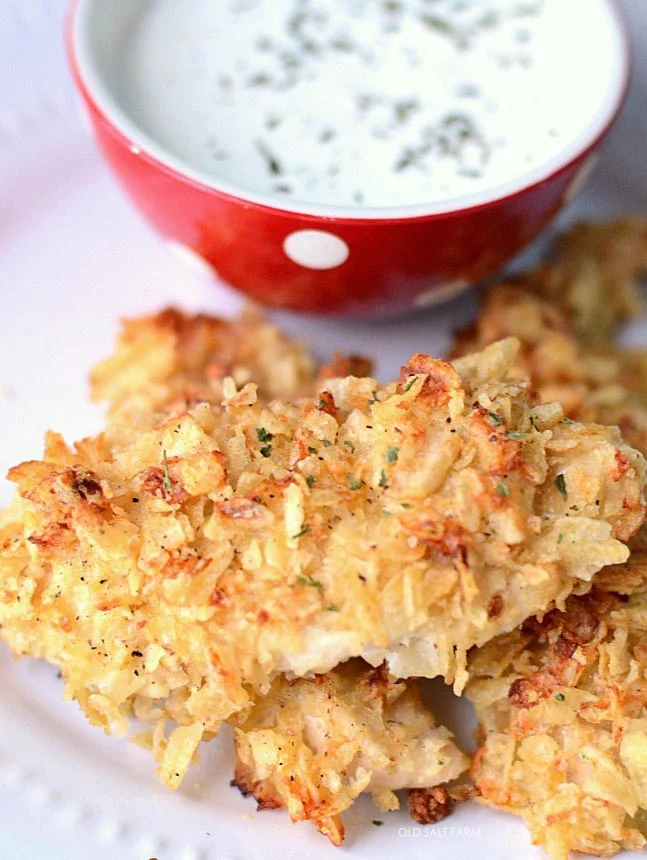

Potato Chip Chicken
Home

Description
Potato Chip Chicken is crispy on the outside, tender on the inside,
and packed with flavor.
Ingredients
- 2 lbs. chicken tenders, or boneless, skinless chicken
- 1 pint buttermilk
- 1 large bag plain, wavy potato chips
- Ranch flavor Packet
Steps
- Preheat oven to 350 degrees. Line a cookie sheet with aluminum
foil and spray liberally with cooking spray.
- If you're using boneless, skinless chicken breasts,
cut them into strips or nugget-sized pieces.
Pour the buttermilk into a large bowl, and let the chicken soak
for 10 minutes, or up to 30 minutes--however much time you have!
- Use a rolling pin to crunch the potato chips while they're in the bag,
then pour them into a pie plate. Add ranch packet One-by-one, take the
chicken from its buttermilk bath, roll it in the potato chips,
then set them on the prepared cookie sheet.
- Bake for 25-30 minutes, or until chicken is done and the potato
chips are golden brown. The baking time will depend on the
size of your chicken--if you did smaller pieces or strips,
so watch carefully
- Serve with ranch dip (ranch dressing packet mixed with sour cream),
honey mustard, and ketchup.